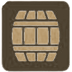

Entradas

Varal de frios 89,90
Queijo Brie Folhado 79,90
Burrata 79,90


Pizzas Salgadas
Caprese 63,90
Genovese 63,90
Romana 63,90
Royale 63,90
Capri 63,90
Toscana 63,90
Pizzas Doces
(Individual)
Romeu e Julieta 19,90
Cartola 19,90
Veneza 19,90
Bebidas
Água mineral 6,50
Água mineral com gás 7,00
Refrigerante 6,50
(Lata)
Suco de uva integral 10,00
(Taça)
Cerveja Artesanal 30,00
(Consultar Rótulo)
Taxa de Rolha 90,00
Claricot Jarra 100,00
(Com Espumante)
Café Expresso 7,00

Espumantes
ITÁLIA
01. Vulcanici Brut Branco115,00
Piemonte
 Blend de uvas brancas
Blend de uvas brancas

02. Vulcanici Brut Rosé115,00
Seleção das melhores áreas do terroir
Blend de uvas brancas e tintas

BRASIL
03. 1913 Sparkling Brut Branco95,00
Bento Gonçalves
Uvas Brancas
 Método Chamat

04. 1913 Sparkling Brut Rosé95,00
Bento Gonçalves
Pinot Noir e Riesling
Método Chamat

05. 1913 Sparkling Moscate95,00
Bento Gonçalves
Moscato Bianco e Moscato Giallo
Método Chamat

06. 1913 Sparkling Branco Demi-sec95,00
Bento Gonçalves
Moscato
Método Chamat

Brancos
ESPANHA
07. Quedate Sauvignon Blanc95,00
Tierra de Castilla
Sauvignon Blanc

PORTUGAL
08. 1808 Vinho Verde118,00
Vinho Verde DOC
Loureiro, Arinto e Avesso

ITÁLIA
09. Vulcanici Pinot Grigio95,00
Puglia
Pinot Grigio

CHILE
10. Casas del Maipo Chardonnay95,00
Valle del Maulle
Chardonnay

Rosés
ITÁLIA
11. Vulcanici Rosato95,00
Puglia
Negroamaro e Malvasia Nera

ARGENTINA
12. 4 Estaciones Spring Rosé95,00
Luján de Cuyo
Malbec

URUGUAI
13. Toscanini Reserva Marselan 129,00
Paso Cuello
Marselan
10 Meses

Tintos
FRANÇA
14. Le Petit Maynne Bordeaux125,00
Bordeaux
Merlot, Cabernet Sauvignon e Cabernet Franc
6 Meses

ESPANHA
15. Quedate Tempranillo105,00
Tierra de Castilla
Tempranillo

16. Castillo de Montearagon Gran Reserva139,00
D. O. Cariñena
Garnacha, Tempranillo e Cariñena
24 Meses

17. Beso de Vino Seléccion (1,5L)150,00
D. O. Cariñena
Syrah e Garnacha
3 Meses

PORTUGAL
18. Esperança Regional Alentejano100,00
Regional Alentejano
Aragonez, Trincadeira e Castelão
3 Meses

19. Esperança Regional Lisboa100,00
Regional Lisboa
Aragonez, Syrah e Alicante Bouschet
3 Meses

20. 1808 Colheita Lisboa110,00
Regional Lisboa
Syrah, Aragonez e Castelão

21. Karta by Sagrado150,00
Douro DOC
Touriga Franca, Tinta Roriz, Tinta Amarela, Tinto Cão e Tinta Barroca
18 Meses

22. Quinta da Esperança Escolha(1,5L)270,00
Regional Alentejano
Alicante Bouschet, Trincadeira e Aragonez
9 Meses

ITÁLIA
23. Vulcanici Merlot90,00
Veneto
Merlot

24. Vulcanici Montepulciano95,00
Abruzzo
Montepulciano

25. Collezione Primitivo Puglia150,00
Puglia
Primitivo

CHILE
26. Casas del Maipo Carménère95,00
Valle del Maulle
Carménère

27. Casas del Maipo Cabernet Sauvignon95,00
Valle del Maulle
Cabernet Sauvignon

28. Ribeira Reserva Carménère100,00
Regional Lisboa
Carménère
9 Meses

29. Casas del Maipo Reserva Syrah120,00
Valle del Maulle
Syrah
9 Meses

ARGENTINA
30. 4 Estaciones Winter Cab. Sauvignon95,00
Maipú, Lujan de Cuyo e Valle de Uco
Cabernet Sauvignon

31. 4 Estaciones Spring Blend120,00
Valle de Uco
Malbec, Cabernet Sauvignon e Petit Verdot

32. Malacara Malbec120,00
Mondoza
Malbec

33. Festivo Malbec150,00
Valle de Uco - Mendoza
Malbec
9 Meses

34. Marcelo Pelleriti Signature250,00
Mondoza
Malbec
12 Meses

URUGUAI
35. Alma Joven Merlot Tannat105,00
Paso Cuello
Merlot e Tannat

36. El Porfiado Blend Reserva125,00
Colonia Estrella
Tannat, Merlot e Cabernet Franc
9 Meses

cobramos couvert.